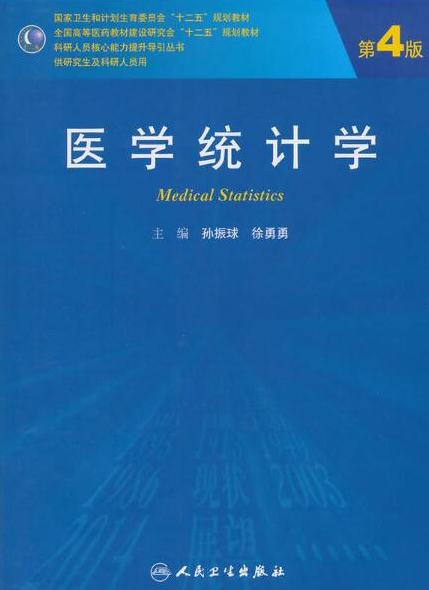

常见医学统计方法R语言实战
2023-06-11
前言
本书缘起
R语言是一门编程语言，但同时也是一个统计软件！
很多刚接触R语言的朋友不知道如何入手，只知道目前R语言在临床医学领域很火爆，做统计分析、画图、做生信分析都离不开R语言。
万事开头难，我非常理解新手面对R语言的痛苦，因为我也是从0开始的，作为从未接触过编程的医学生/医生来说，初学R语言简直就是读天书！我最开始接触R语言是因为偶然间听师兄师姐说R语言可以做统计学，当时的我对SPSS的使用不熟练，觉得SPSS的使用步骤太多，难以记住，于是入了R语言的坑…没想到从此一发不可收拾，打开了新世界的大门。
这个系列也是我最开始学习R语言时的笔记，在我的公众号：医学和生信笔记，都可以找到，现在对原内容进行重新整理，并把数据一起打包，方便有需要的同学学习。
如果你是刚入门的小白，我首先推荐你了解下R语言的基础知识，比如R语言和R包安装（初学者请参考附录）、Rstudio的界面、R语言中数据类型（向量、矩阵、数据框、列表等）、R语言中的数据导入导出、R语言的基础数据操作等。
然后你就可以跟着本系列一起学习R语言在医学统计学中的使用。这个系列非常适合初学者，因为是按照课本来的，使用R语言复现课本中的例题，得到结果后可以与课本对照！我使用的课本是孙振球主编的《医学统计学》第4版（第5版和第4版内容变化不大），封面如下：

由于R和SPSS在进行统计分析时的一些数学计算方面并不是完全一致，所以导致有些结果和课本中的结果有些出入，但是并不影响结果的正确性。
限于本人水平等问题，难免会有一些错误，欢迎大家以各种方式批评指正，比如公众号留言、粉丝QQ群、github、个人微信等。
本书会不定期更新，内容和格式都会不断完善。
注意：本书实际上是我公众号历史推文的汇总，书中涉及的所有数据都可以在相关历史推文中免费获取！历史推文合集链接：医学统计学
我也准备了一个PDF版合集，内容和网页版一致，只是打包了所有的数据，付费获取（10元），介意勿扰！PDF版合集获取链接：常见医学统计方法R语言实现合集
作者简介
- 阿越，外科医生，入门生信工程师，业余程序员。
- R语言爱好者，长期免费分享R语言和医学统计学、临床预测模型、生信数据挖掘、R语言机器学习等知识。
- 公众号：医学和生信笔记
- 知乎：医学和生信笔记: https://www.zhihu.com/people/li-xiao-yue-65-90
- CSDN：医学和生信笔记: https://blog.csdn.net/Ayue0616
- 哔哩哔哩：阿越就是我: https://space.bilibili.com/42460432
- Github：ayueme: https://github.com/ayueme